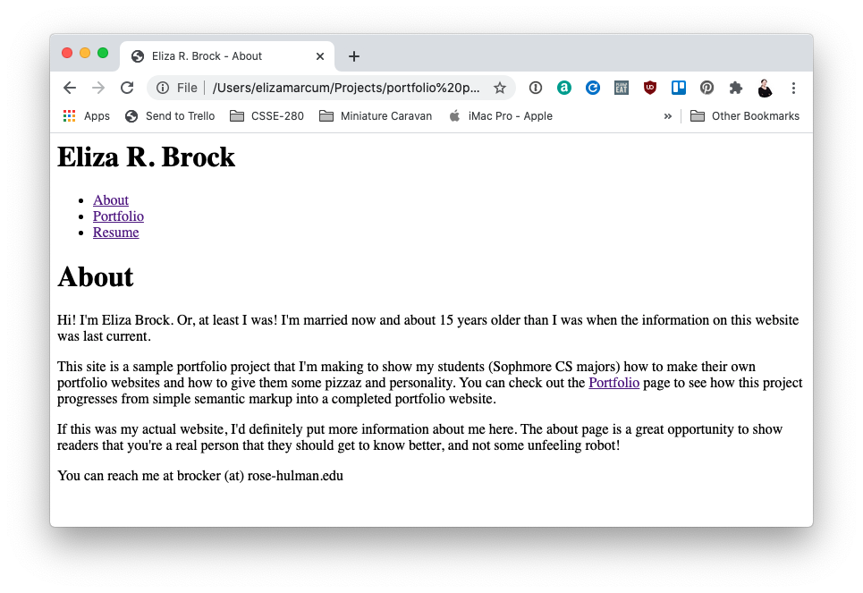
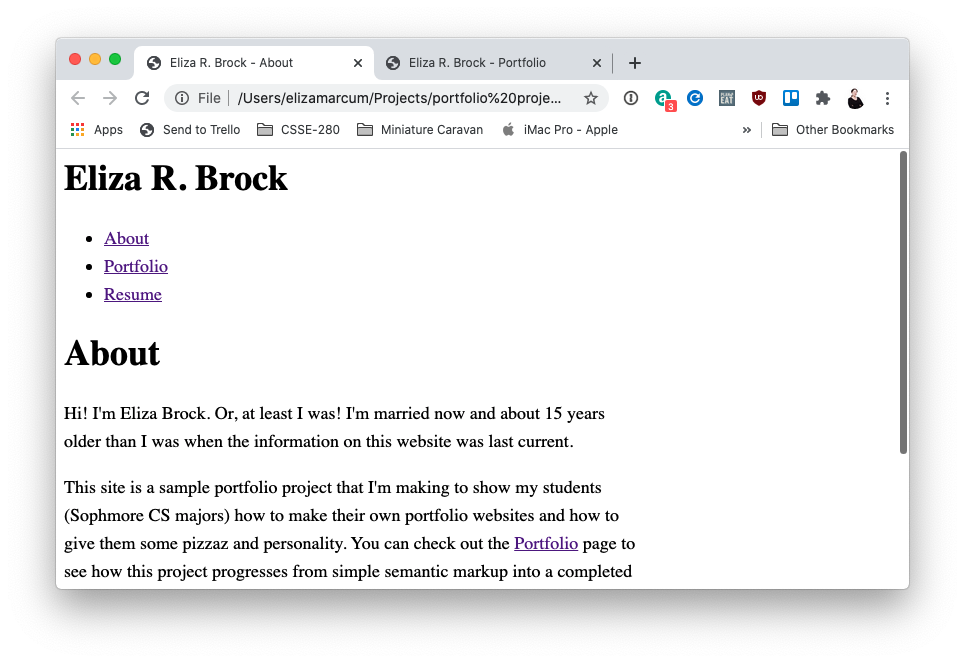
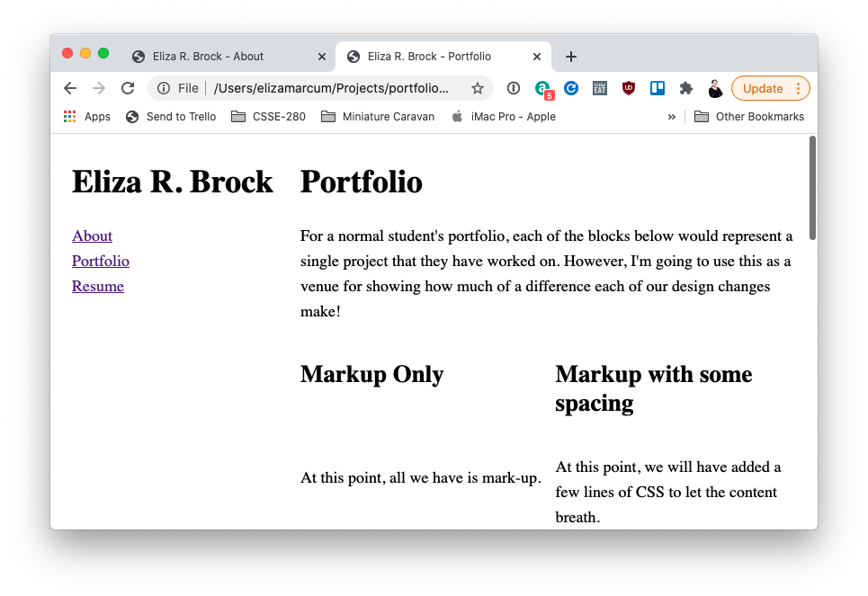
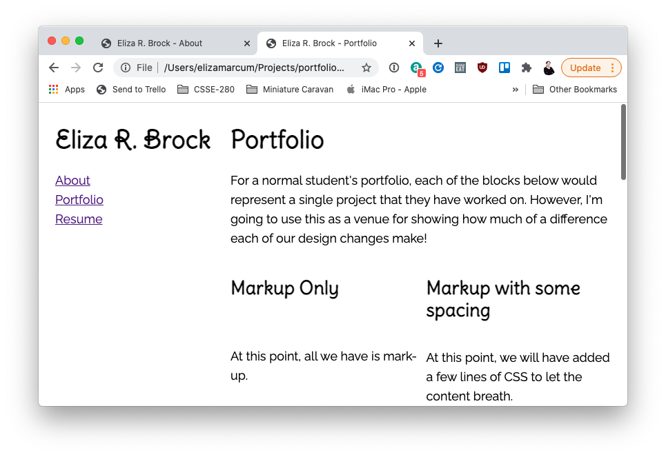
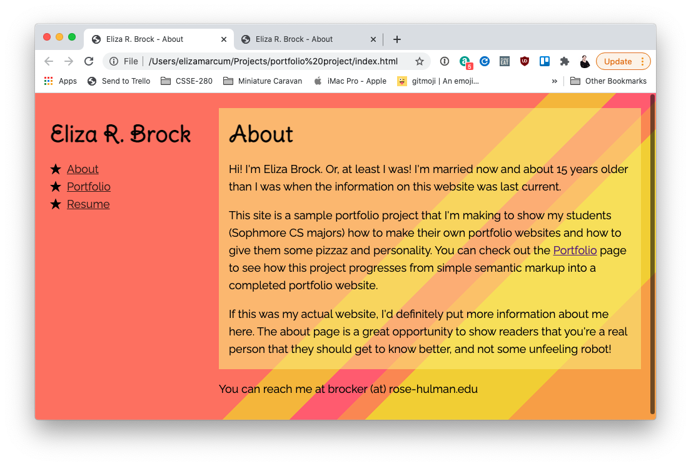
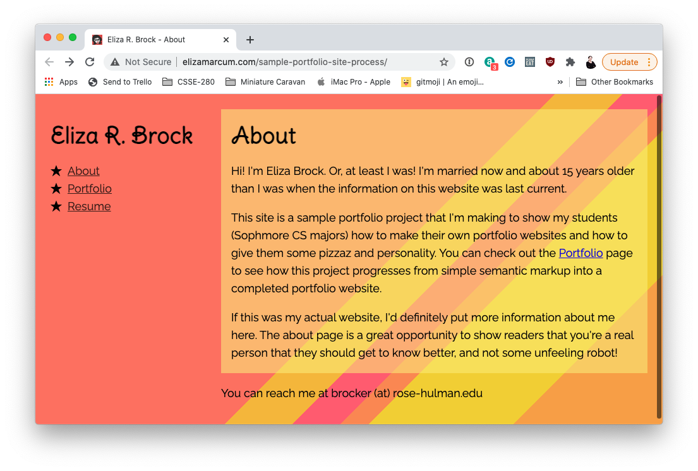

Portfolio
For a normal student's portfolio, each of the blocks below would represent a single project that they have worked on. However, I'm going to use this as a venue for showing how much of a difference each of our design changes make!
Markup Only
At this point, all we have is mark-up.
Markup with some spacing
At this point, we will have added a few lines of CSS to let the content breath.
Markup with basic layout
At this point, we will have created a basic layout for our portfolio.
Typography
Adding some font choices at this point will really bring in some personality!
Adding images
At this point, we will add a few unstyled images

Adding color!
At this point, we will pick a color scheme. Things will start to come together!
Let It Rest
At this point, there are going to be plenty of issues with how this site looks and how garish the colorscheme is. We'll let it rest for a few hours and then pick it back up again to see how it looks after a rest!

JavaScript Interactivity
We'll wrap up the coding by adding a smattering of JavaScript interactions

Deploying to GitHub Pages
Finally, we'll deployed the final project to GitHub Pages!
